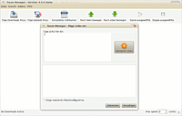
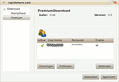

Tucan
Archivierte Anleitung
Dieser Artikel wurde archiviert, da er - oder Teile daraus - nur noch unter einer älteren Ubuntu-Version nutzbar ist. Diese Anleitung wird vom Wiki-Team weder auf Richtigkeit überprüft noch anderweitig gepflegt. Zusätzlich wurde der Artikel für weitere Änderungen gesperrt.
Zum Verständnis dieses Artikels sind folgende Seiten hilfreich:
Tucan  ist ein freier Download-Manager für den Download von Dateien, die bei One-Click-Hostern wie Rapidshare
ist ein freier Download-Manager für den Download von Dateien, die bei One-Click-Hostern wie Rapidshare  u.a. gehostet sind.
u.a. gehostet sind.
Er bietet eine komfortable Möglichkeit, mehrere Dateien gleichzeitig herunterzuladen (meist ist dazu ein Premium-Account des jeweiligen Anbieters notwendig), wofür man auch Premium-Account-Daten eines Hosters eingeben kann. Darüber hinaus befreit er den Benutzer von der Eingabe von Captchas, die beim normalen Download im Browser erforderlich ist, in dem er diese mit Hilfe von tesseract-ocr automatisch erkennt. Eine Upload-Funktion ist in Planung.
Da Tucan in der Programmiersprache Python geschrieben ist, ist er sowohl schnell und leichtgewichtig als auch plattformunabhängig: neben der Linux-Version gibt es Versionen für Windows und Mac. Über eine Plugin- und Addon-Schnittstelle lässt sich Tucan einfach um neue Hoster und Funktionen erweitern.

Installation¶
Aus den Paketquellen¶
Tucan lässt sich bequem per Paketmanager aus den Ubuntu-Quellen installieren:[1]
tucan (universe)
 mit apturl
mit apturl
Paketliste zum Kopieren:
sudo apt-get install tucan
sudo aptitude install tucan
Tucan ist dann im GNOME-Menü unter
"Anwendungen -> Internet -> Tucan Manager"
zu finden.
Entwickler-Version aus dem SVN-Repository¶
Hinweis!
Fremdsoftware kann das System gefährden.
Die Entwickler-Version mit neuen Funktionen kann mit Subversion heruntergeladen werden.
svn co https://forja.rediris.es/svn/cusl3-tucan/trunk
Bedienung¶
Nach der Installation findet man Tucan unter "Anwendungen -> Internet -> Tucan Manager" (GNOME) bzw. "Anwendungen -> Netzwerk -> Tucan Manager" (Xfce).
Die Bedienung Tucans ist denkbar einfach. Alle wichtigen Funktionen sind über die Toolbar erreichbar. So lassen sich dort Links hinzufügen ("Füge Downloads hinzu"), einzelne Downloads starten und stoppen, in der Reihenfolge verändern ( bzw. ) sowie alle abgeschlossenen Downloads entfernen ("Komplettes Aufräumen").
Hinweis:
Die Funktion zum Hinzufügen von Uploads ist noch nicht implementiert, soll aber in späteren Versionen folgen.

Download mit Premium-Accounts¶
Nahezu jeder One-Click-Hoster bietet neben dem kostenlosen Download von Dateien, der meist mit Wartezeiten, erheblichen Geschwindigkeitsbegrenzungen und Download-Limits verbunden ist, Premium-Accounts an, die den Nutzer (gegen Bezahlung) von diesen Einschränkungen befreien. Auch in Tucan lassen sich Premium-Accounts nutzen. Dazu klickt man auf "Ansicht -> Einstellungen" und dort auf den Reiter "Service-Konfiguration", wo sich die Accounts einzelner Anbieter verwalten lassen. Ein Doppelklick auf den jeweiligen Anbieter lässt ein Fenster mit den entsprechenden Einstellungen erscheinen.
- Erstellt mit Inyoka
-
 2004 – 2017 ubuntuusers.de • Einige Rechte vorbehalten
2004 – 2017 ubuntuusers.de • Einige Rechte vorbehalten
Lizenz • Kontakt • Datenschutz • Impressum • Serverstatus -
Serverhousing gespendet von